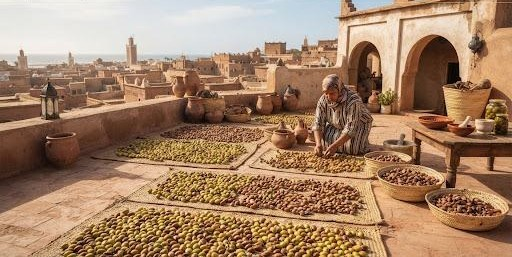
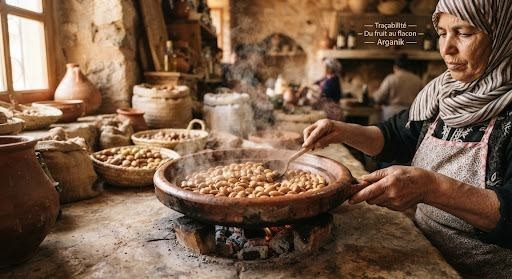

HONNÊTETÉ BOTANIQUE & RIGUEUR
HONNÊTETÉ BOTANIQUE & RIGUEUR
Traçabilité : Du Fruit au Flacon
Une transparence totale de l'arbre jusqu'à votre peau. Chaque goutte d'huile Arganik porte l'histoire d'un terroir préservé et le savoir-faire méticuleux de nos coopératrices.
Vérifier l'authenticité d'un lot
Accédez au carnet de récolte certifié de votre flacon
LOT ARG-2024-88 — CERTIFIÉ CONFORME
Extraction manuelle contrôlée
Terroir & Parcelle
Vallée d'Ida Outanane
Arganiers sauvages, 720md'altitude
 Date de Récolte & Presse
Date de Récolte & Presse
Septembre 2024
Pressée à froid le 24/09/2024 à28°C
 Analyses de Pureté
Analyses de Pureté
Acidité < 0.28%
Vitamine E : 640 mg/kg(Ecocert n 24-098)
LE R I T U EL DE FA B R I CAT I O N
6 Étapes, Zéro Compromis
De la cime des arbres protégés de l'UNESCO jusqu'au scellement du bouchon en verre ambré, chaque geste répond aux normes d'excellence les plus strictes.
ÉTAPE 01 : RAMASSAGE SOLAIRE
Récolte des fruits d'arganier sauvages
Ramassage respectueux exclusivement au sol une fois que les fruits ont mûri et chuté naturellement. Le gaulage est formellement banni pour préserver les rameaux nourriciers et l'intégrité biologique de la canopée de l'arganier.
Forêt protégée du Souss-Massa

ÉTAPE 03 SAVOIR-FAIRE ANCIEN
Dépulpage et concassage manuel
Le coeur du geste ancestral : la coque, seize fois plus dure que celle d'une noisette, est brisée d'un coup sec et précis entre deux galets de granit polis. L'amandon blanc pur est libéré intact, sans jamais être écrasé.
Geste transmis de mère en fille

ÉTAPE 05 PREMIÈRE PRESSION
Pressage à froid mécanique < 40°C
Extraction mécanique continue sans aucun solvant chimique ni adjonction d'eau. La température est surveillée minute par minute pour ne jamais dépasser 38°C, garantissant un taux intact d'acides gras essentiels (Oméga 6 & 9) et de stérols protecteurs.

ÉTAPE 02 SÉCHAGE NATUREL
Séchage au soleil sur les terrasses
Les fruits fraîchement recueillis sont étalés sur les toits plats de nos ateliers coopératifs. Durant plusieurs semaines d'exposition au doux soleil marocain, la pulpe se dessèche naturellement sans recours à aucun séchoir artificiel ou combustible fossile.
21 jours sous brise atlantique

ÉTAPE 04 CULINAIRE SEULEMENT
Torréfaction artisanale au feu doux
Réservée exclusivement à notre gamme alimentaire et notre Amlou du terroir. Les amandons sont lentement dorés dans un plat en terre cuite à feu très doux pour déployer des arômes irrésistibles de noisette grillée et de pain chaud. L huile cosmétique, elle, ne subit aucune cuisson pour conserver 100% de sa vitamine E.
 Flacons recyclables anti-oxydation
Flacons recyclables anti-oxydation